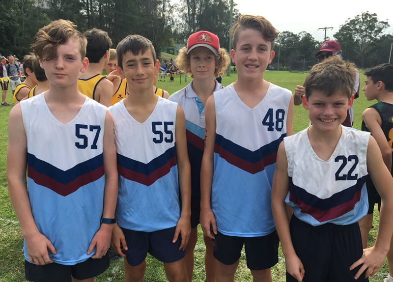

It's been another successful year for the Cross Country Association's school championship, with over 100 schools taking part from up and down the country. Although it was not the most interesting of courses, both for athletes and spectators, it did provide a testing challenge with long stretches of dragging inclines and some muddy sections.
With the quality of the races, any top one hundred finisher has done remarkably well. The winning team of J Martin, T Barryworth, K Eyley and S Langford produced a stunning combined time. We look forward to seeing them compete again next year.
Additionally, these young athletes have been selected to represent the country in The Just Giving London Mini Marathon on the 23rd April. Teams of six in each age group will compete for the nine Regions, plus Scotland, Wales and Northern Ireland, running the last 3 miles of the main Marathon Course, finishing in The Mall.